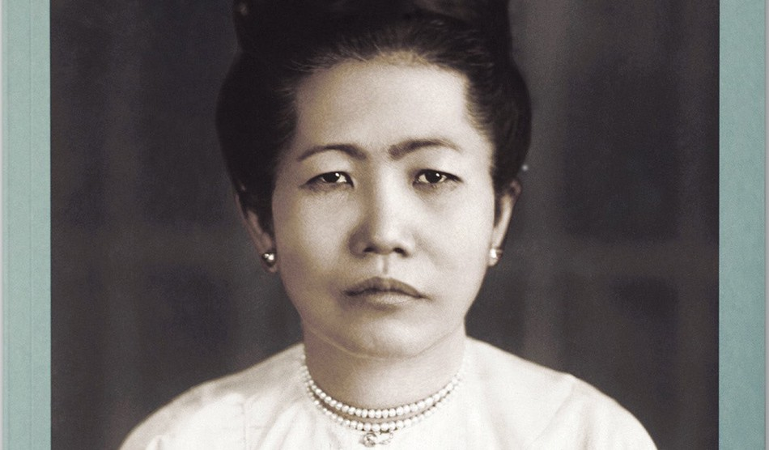

On Wednesday 11 March, we were delighted to go to the River Café for the London launch of Burma: Food, Family & Conflict co-authored by brother and sister, Stephen and Bridget Anderson. The book centres around interviews with the authors' grandmother Gertrude (referred to as Grandy), the daughter of Sir William Carr, an English colonial high court judge and Ma Khin, a Burmese woman who rolled cheroots (cigars) for a living. Their controversial marriage sent shockwaves through both British and Burmese society. Burma shows us how the history of food is the history of the world telling the story of colonialism through this family. The four-course meal very generously hosted by Ruth Rogers, a passionate supporter of the book, who said: "Innovative and engaging, Burma: Food Family and Conflict fuses original research, family testimony and recipes, tracing Myanmar's shift from colonialism to the struggle for independence. The recipes in the book brilliantly demonstrate cultural sharing as people cross borders, bringing their favourite dishes with them – I'm so excited to do this for this book which I really believe in and love."
An incredible group of top food journalists joined us as well as a representative from the Burma Campaign UK and Blackwell’s bookshop in Oxford. This led for an interesting, in-depth discussion about food and culture over a wonderful meal, which followed an engaging presentation from Bridget and Stephen. Interestingly, Bridget is a Professor of Migration, Mobilities and Citizenship at Bristol University and her brother, Stephen, is a chef and restaurant owner in Valencia, Spain whose restaurant the Ma Khin Café www.makhincafe.com/en/ is named after their great-grandmother. This makes the book a unique mix of genre: fusing personal testimony, politics and delicious recipes.
According to Bridget and Stephen: "Growing up with mixed heritage in South Wales in the 70s was to feel both perpetually out of place and open to the world. This was brought into our family home by Mum’s fantastic cooking. Our lives were differently shaped by these experiences... We decided to write this book as a thanks and testimony to the three generations of loving and resilient women."
The recipes in the book – from mon prawn curry to flapjacks – demonstrate cultural sharing as people cross borders, bringing their favourite dishes with them. Stephen Anderson has two restaurants in Valencia, serving decolonial Asian food in a mission that "respects culinary traditions, celebrates cultural encounters and sharing, and looks forward to a world where people are welcomed as much as their food."
You can buy the book here.